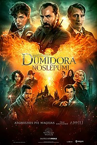

Dumidora noslēpumi

"Fantastiskās būtnes: Dumidora noslēpumi" (angļu: Fantastic Beasts: The Secrets of Dumbledore) ir 2022. gada fantāzijas filma. Filmas režisors ir Deivids Jeitss, scenārija autori ir Dž. K. Roulinga un Stīvs Kloviss. Tas ir turpinājums filmai "Fantastiskās būtnes: Grindelvalda noziegumi" (2018), trešā filma "Fantastisko būtņu" filmu sērijā un vienpadsmitā filma visā Wizarding World franšīzē. Lomas atveido Edijs Redmeins, Džūds Lo, Ezra Millers, Dens Foglers, Elisone Sudola, Kalums Tērners, Džesika Viljamsa, Ketrīna Voterstone un Madss Mikelsens. Filmas darbība norisinās vairākus gadus pēc iepriekšējās daļas notikumiem un tajā Baltuss Dumidors Ņūtam Skamanderam ar sabiedrotajiem uzdod veikt misiju, kas viņus ieved tieši tumšā burvja Gelerta Grindevalta armijas sirdī.